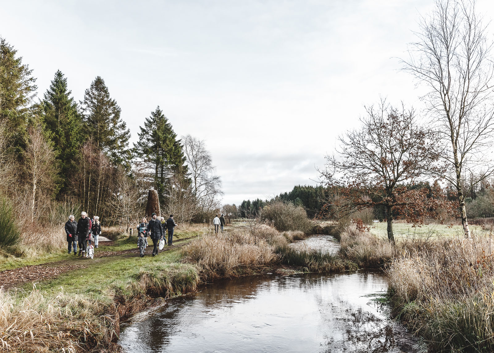
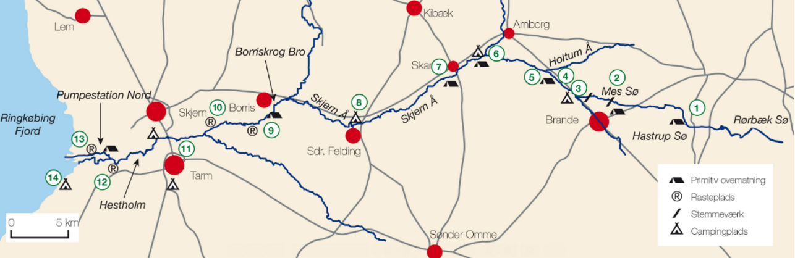

Aaskov Kanofart
Priser
Alle priser er inkl. moms.
Dagspris pr. kano
300 kr.
Udkørsel 1 pr. kano
100 kr.
Udkørsel 2 pr. kano – hvis kanoen ikke starter eller slutter ved Skarrild Rasteplads
50 kr.
Der er mulighed for at leje spande og købe brændsel
Transport af kanoerne – se priser ovenfor.
Redningsveste til alle er inkluderet i prisen.
Der tages ikke i mod kreditkort, medbring derfor venligst kontanter eller mobilepay.
Vi tager mod Danske Kroner (DKK) og Euro (€).
Ved afbestilling senere end 8 dage før afrejsedato, påregnes et afbestillingsgebyr på 50%.
Det er ikke muligt at leje kanoer i perioden.
I er altid velkommen til at kontakte os på mail for booking øvrige dage.
God sommer.
Kort
En kanotur på Skjern å er en hyggelig og eventyrlig oplevelse for hele familien.
En tur så tæt på naturen er både afslappende og fredelig for alle.

1
Hastrup Rasteplads
På rastepladsen er der mulighed for teltopslagning uden gebyr. Toilet og vand forefindes.
2
M.E.S
Sidst i søen på venstre side er der anlagt rasteplads, denne kan frit benyttes. Vand, toilet og grillplads forefindes. Trailer/rampe er til rådighed, når kanoen skal over stemmeværket.
3
Brande Camping
Dette er et forslag til at raste eller overnatte mod betaling. Der er mulighed for proviantering. Husk indskrivning foregår i kiosken.
4
Sandfeld Rast
Der er mulighed for overnatning uden gebyr. Vand, toilet og grillhytte forefindes. Bemærk: ca. 12 km. til næste rast.
5
Engebækbroen
Mulighed for hjemtransport, kanoerne trækkes op på venstre bred, ca. 3 km. fra Sandfeld Rast.
6
Skjern Å Bro
Ophalingssted kort efter broen på højre bred ved stemmeværket. Her findes toiletter og drikkevand. Der er mulighed for overnatning i shelters. Ingen gebyr.
7
Skarrild By
Der er anlagt kanorast med bålhus og shelters på venstre bred efter broen. Toilet og vand forefindes. Mulighed for proviantering i byen. Kanoer til hjemtransport henvises til modsatte bred ca. 100 m. nedstrøms, se skiltning.
8
Sdr. Felding
Her passeres Herning-Varde landevejen. På venstre bred ca. 100 m. efter broen findes Sdr. Felding camping og hytteby, overnatning mod gebyr. For hjemtransport afsluttes turen her. Ca. 100 m. nedstrøms er der mulighed for rast. Der kan købes proviantering i byen.
9
Borris, Skolevænget
Skov- og Naturstyrelsen har anlagt kanorast på højre bred. Shelter, tørkloset, borde og grill findes på pladsen, ikke drikkevand. Ingen gebyr. Ca. 1 km. til Borris By med mulighed for proviantering.
10
Gjalbæksbro
Ophalings- og isætningssted. Kanoen trækkes på land til venstre efter vejbroen.
11
Skjern Havn
Et godt sted at holde hvil. Toilet og grillplads forefindes. Der skal holdes til højre før broen.
Bemærk: Der skal holdes til venstre hele vejen indtil åen deler sig i to, ca. 1½ km efter Lønborg Kirke, hvor der skal holdes til højre. Der må ikke sejles de andre veje, da det er fredet områd
12
Lønborg Rasteplads
Lige efter Lønborg Kirke er der mulighed for at raste. Toilet forefindes.
13
Pumpestation Nord
Dette er sidste rasteplads inden Ringkøbing Fjord. Der er mulighed for overnatning. Toilet, vand og grillplads forefindes. Ca. 1 time til Skaven Havn.
14
Skaven Havn
Sidste stop for sejlads på Skjern Å. Kanoerne ligges på land før Restaurant Skaven Hus.
Hastrup Rasteplads til M.E.S. – 8 km
M.E.S. til Brande Camping – 6 km
Brande Camping til Sandfeld Rast – 4 km
Sandfeld Rast til Engebækvej – 3 km
Engebækvej til Skjern Å bro – 9 km
Skjern Å bro til Skarrild By – 9 km
Skarrild By til Sdr. Felding – 12 km
Sdr. Felding til Borris – 12 km
Borris til Gjaldbækbro – 3 km
Gjaldbækbro til Skjern Havn – 10 km
Skjern Havn til Lønborg Rast – 6 km
Lønborg Rast til Pumpestation Nord – 2 km
Pumpestation Nord til Ringkøbing Fjord – 3 km
Sejladshastighed ca. 3 km. pr. time
Praktiske oplysninger
Sejladsregler
Kun kanoer, kajakker og robåde med registreringsnummer må sejle på åen og i søerne
Der må kun sejles i perioden 16. juni til 30. september. Der må kun sejles dagligt mellem kl. 08.00 til kl.18.00.
Der må ikke sejles mod strømmen eller ind mod brinker, garn eller ruser.
Der må ikke larmes – lyt istedet til naturen.
Der må ikke sejles med sammenbundne kanoer.
Smid ikke affald! Tag det med til rastepladserne.
Der må ikke tændes bål udenfor de anviste steder (rastepladser).
Hunde må ikke medtages.
Fiskeri
Fiskeri må ikke ske fra kanoerne.
Hvis du vil fiske kræver den danske lovgivening at du køber et fiskekort af staten.
Ligeledes skal der købes fiskekort af lodsejerene. (Ring for information)
Der må kun fiskes der hvor kortet gælder.
Landgang
Brug de anviste raste- og teltpladser.
I dagtimerne er det tilladt at gå i land på udyrkede arealer, der ikke er indhegnet.
Det er ikke tilladt at gå i land på afgræssede enge, ved bebyggelser og i haver.
Stemmeværker eller skodder må ikke røres.
Ved passage af stemmeværker etc. er det vigtigt at man husker at køre bådtralieren tilbage- der kommer også nogle efter dig.
Larm
Larm er meget ilde set.
Hvis du ønsker en naturoplevelse er det vigtigt at du husker at du er gæst i naturen – dyrene bor der.
Proviant
Ved Brande Camping er der et cafeteria hvor der kan handles og spises.
Rastepladsen i Skarrild By ligger 500 m. fra en lille købmand som har åben
mandag – fredag til kl.19 og lørdag – søndag til kl.17.
Sdr. Felding Campingplads ligger i Sdr. Felding by hvor der er mulighed for proviantering.
Borris Rasteplads ligge ca. 1 km. fra Borris by hvor der også kan handles.
Affald
Smid aldrig affald i åen eller på brinken.
Der er skraldespande på alle rastepladser.
Skarrild By
Der er anlagt kanorast med bålhus og shelters på venstre bred efter broen. Toilet og vand forefindes. Mulighed for proviantering i byen. Kanoer til hjemtransport henvises til modsatte bred ca. 100 m. nedstrøms, se skiltning.
Åben ild
Der på kun tændes åben ild på rastepladsernes bålplads.
Husk altid at slukke bålet når det forlades.
Gode råd om kanosejlads
Fordel vægten ligeligt, med tyngde i bagenden,
Stå aldrig op i kanoen.
Bevæg dig altid med langsomme og rolige bevægelser.
Den som sidder forrest ror, mens den som sidder bagerst styrer.
Hvis man kæntre – så stol på redningsvesten, den kan godt bære dig.
Medbring en vandtæt pose til eks. mobiltelefoner.
Tag en snor (ca. 2 m) og bind pagajen til håndledet
Parkering
Der er parkeringspladser ved alle rastepladser.
Hvis man kommer i 2 biler – kør den ene til slutstedet og den anden til startstedet.
Sikkerhed
Tag altid redningsvesten på, også selvom at du er en udmærket svømmer.
Bind jeres ting fast til kanoen så det ikke synker.
Hvis en kano driver fra jer, ring straks til udlejer.
Ved landgang stiger den forreste af først og trækker kanoen på land.
Pas på nedhængende grene. Bøj jer fremover så man ikke får noget i øjnene.
Kontakt
Åskov Kanofart
Address
Assingvej 10, Skarrild
6933 Kibæk
Telefon
+45 2258 9104
aaskov-kanofart@privat.dk